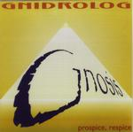

Home Artist links Label link

| Artist: | Gnidrolog |
| Title: | Gnosis |
| Label: | Snails Recorcds 70091022 |
| Length(s): | 74 minutes |
| Year(s) of release: | 2000 |
| Month of review: | 07/2000 |
Line up
Colin Goldring - vocals, recorder, backing vocals, acoustic guitar
Stewart Goldring - guitars, backing vocals
Rick Kemp - bass, backing vocals
Nigel Pegrum - drums, percussion
Chris Lloyds - backing vocals
Nessa Glen - hammond, kalimba, keyboards, harpsichord, sitar
with
David Hudson - didjeridoo
Chris Copping - hammond b3
Tracks
| 1) | Reach For Tomorrow | 5.14
|
| 2) | Reverend Katz | 6.02
|
| 3) | Fall To Ground | 4.52
|
| 4) | Woolunga | 4.22
|
| 5) | Wonder, Wonder | 4.41
|
| 6) | Deventer | 4.51
|
| 7) | Bells Of Prozac | 6.27
|
| 8) | Kings Of Rock | 6.50
|
| 9) | Gnosis | 6.46
|
| 10) | Crazy, Crazy | 4.30
|
| 11) | Going To France | 4.42
|
| 12) | The City Sleeps | 4.42
|
| 13) | Two Helens | 3.28
|
| 14) | Repent Harlequin | 6.30
|
Summary
After many years Gnidrolog got together again to record a new studio album.
The subtitle of the album is Prospice, Respice, indicating the fact that
some of the music here is new, some is quite old, from the time of the
previous Gnidrolog incarnation.
The music
The opener is a subdued track with some slight Arabic leanings in the vocal
parts. The bass work is low and pronounced, the organ adds to the atmosphere
and the chords on electric guitar add some power. The vocals are sometimes
quite intense and like I said have strong Arabic leanings. A good song and
it can not be told from the song that it was written back in 1970.
Reverend Katz is an instrumental, and a rocking one at that. Sometimes a bit
bouncy and punctuated by some rather heavy percussion. The variation in the
music sounds natural, but the song is more a tune than anything else. A long
tune though. Fall To Ground is an acoustic track, a bit melodramatic and
laid back. This is pop, not rock.
Woolunga is back to instrumental rock with some energetic low sounds from
the didgeridoo and a nice theme running through it. The guitar plays in
slide fashion and the pace is rather high.
Wonder, Wonder is a bit of sunny track, especially the chorus is quite
merry. The classical guitar is the dominating element in this track. Again
the music may not be considered terribly progressive, but its an entertaining
track nonetheless. The name of the Dutch band Lady Lake is a tribute to
Gnidrolog, and now it seems Gnidrolog are returning the favour by their song
Deventer (the city that Lady Lake comes from originally). A somewhat folky
track, mostly because of the melodic flute playing of Colin. A good, driven
and entertaining instrumental with some flamenco guitar added. With Bells Of
Prozac the alternation of instrumental/vocal track is done away with, because
this track is also an instrumental. Again some didgeridoo's on this one,
while the track itself is a varied and rather complex piece of work, with
a number of different passages being alternated and at any given point in time
quite a number of instruments are involved in different ways making the music
sound rather full. Kings Of Rock finds us halfway the album. This track
is an old one, written in 1973 as something of a reaction to the death of
Hendrix and Joplin. This is a rather potent brew with an imposing and
bombastic chorus with loads of Hammond and electric guitar. The music does
sound a bit seventies. The song ends moodily. The title track is an
instrumental and quite a heavy one with a dominating electric guitar. The
music is slightly jazzrockish here reminding me in a way of old Camel. The
band states that this track contains influences of hassidic dance tunes and
I understand what they mean. A good, complex and energetic instrumental.
One extended jam, but not a note too much. Time for another song directed
track with Crazy, Crazy. A mid-tempo track with slide guitar and a catchy
chorus. The weirdest thing is that because of the vocals I'm sometimes
reminded of Axl Rose. Hmm. Going To France balances vocal and instrumental
tracks. Going To France is a blues rock piece, a plodding track for the Brits
visiting France for the world championship football in 1998. The song
itself is not terribly interesting from a progressive point of view, but the
bridge is nice. I guess its Colins Helen who doesn't want to go topless.
I think this, because the wives of both Colin and Stewart are called Helen
as is stated for the still to come instrumental Two Helens.
The City Sleeps is yet another vocal track, but this is actually one of
the better ones in my opinion. It opens very well with a good theme and the
vocal melodies both in the verses and the tense and uplifting chorus
are tops. The Two Helens is a piece on classical guitar. Nice.
The final track is Repent Harlequin, based on a story by Harlan Ellison.
This the real masterpiece of the album. Think of The Steppes by Steve Hackett
but more orchestral and to be honest: better. An extremely powerful track
with menacing undertones. An overpowering finale.
The music of the band and the lyrics are quite good, but less humerous
than I'm used to. The tongue in cheek sometimes does come out in the
liner notes at times: We Shall Wear It Always.
Conclusion
A mixed bag of tracks: some progressive, some laid back rock, some in
between. I like the "ordinary" tracks a bit less (Crazy, Crazy or Wonder,
Wonder or Fall To Ground), although these also have their moments. The band
comes out best in the instrumentals such as the blistering title track and
tracks such Woolunga, Reverend Katz and of course the magnificent
Repent Harlequin.
© Jurriaan Hage